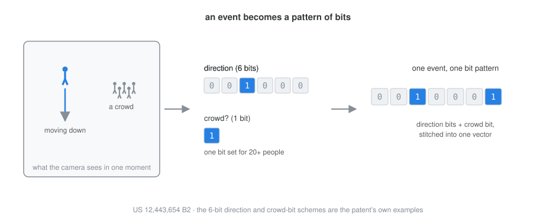

Video, in Bits
Search security video by example. Point at one moment, a person going the wrong way down a corridor, and it finds every other moment like it across weeks of footage. Each event becomes a pattern of bits, arranged so that similar events share bits, which turns the search into little more than counting.
Somewhere there is a week of video and a person who has to find one thing in it: the moment that matches one they already have. A figure moving against the flow, a crowd forming where a crowd should not, a car going the wrong way. They know it when they see it. The trouble is the seeing, because finding it means scrubbing, hours of ordinary footage for the few seconds that are not.
You can put a rules engine in front of the video, but rules have to be written, and writing the rule for “something like this” is exactly the thing nobody quite knows how to do in advance. My patent with Yanyan Hu, US 12,443,654 B2 (grant PDF), takes a different route: it turns every event in the video into a short pattern of bits, and makes searching a matter of comparing those patterns.
An event as a handful of bits
The camera’s analytics already describe what happens in a scene as metadata: a person walking, a vehicle turning, a crowd gathering. The idea is to reduce each of those events to a bit pattern. Movement gets a few bits, one for each direction it might go. Occupancy gets a bit that flips on when the crowd passes some size. Stitch the pieces together and a moment of video becomes a short binary vector, a row of ones and zeros that says, in the plainest possible terms, what was going on.

The whole video becomes a set of these vectors, one per interval, kept in an index. The interval length is about the only real knob: ten seconds keeps the index compact, one second keeps it precise.
Where it happened
Location works the same way, through a stack of grids at different scales, from a single cell covering the whole scene down to a fine sixteen-by-sixteen. An event lights a cell at each scale, so you can ask for “movement anywhere” or “movement in that far corner” just by choosing how fine a grid to read.
And when
Time gets the same treatment, and it is where the overlap trick earns its keep, because time is full of moments that ought to feel close but look far apart on a clock. Late Sunday and early Monday belong together; so do the minute before midnight and the minute after. The filing writes a timestamp two ways. The plain way is one-hot, seven bits for the day of the week, twenty-four for the hour, where Tuesday is Tuesday and sits near nothing. That suits an exact match and nothing around it.
The other way carries similarity. A moment in the week becomes a band of contiguous bits spread across neighbouring hours, so a late Tuesday evening and an early Wednesday morning share bits and score as close, while Tuesday and Monday, further off, share fewer. The band wraps at the ends, so Sunday night falls beside Monday morning and the last minute of a day beside the first. The same scheme at the scale of a single day puts an event at 9:55 in the evening nearer to one at 10:25 than to one at 9:05. Ask for “around this time” and you get the neighbourhood, not just the exact tick.
One long row
So far each piece is its own small pattern of bits: a direction, a crowd, a place, a time. The last step just lays them end to end. The time bits come first, then the bits for each cell of the grid, in a fixed order, and the whole lot is one long row. Because that order never changes, the bit in a given position always means the same thing, in every moment, across the whole index. That is what makes two moments comparable at all: line the rows up and count.
Search by example
Now the search that investigator wanted is easy to state. Take the moment you already have, read off its bit pattern, and compare it against every pattern in the index. Rank by how many bits they share. What comes back is a list of moments, most alike first, each with a score and a timestamp to jump to.
Nobody had to write a rule for “a person going the wrong way.” The example is the query.
Or just one corner of it
Because the row is built in pieces, a query can be built the same way. You do not have to fill in every bit. Set only the bits you care about, a person moving down, in only the part of the scene that matters, the cell over the loading door, and leave the rest open. The comparison then counts matches only where you asked. “Someone going the wrong way through that door” becomes a query you compose rather than a rule you write, and the grid is what makes a place selectable at all: pick a cell, and the search is masked down to it.
Why bits
Feature vectors of floating-point numbers can do similarity search too, and an earlier patent of mine did exactly that for appearance search. Bits buy something different. They are tiny to store and trivial to compare, a few machine instructions per event, which matters when the index holds every second of every camera for months. And because the similarity is built into the encoding rather than learned, you can read a pattern off and know what it means. It is the low-tech cousin of a vector database, and for a great many surveillance questions it is enough.
This was joint work with Yanyan Hu at Motorola Solutions. Filed January 2023, granted October 2025.
These posts are my attempt to explain my own patents in plain English, with the diagrams I wish the filings had. In the order I wrote them: The Tripwire Patent · Learning Normal · Vector Search, 2018 · The Poses of Normal · Video, in Bits.